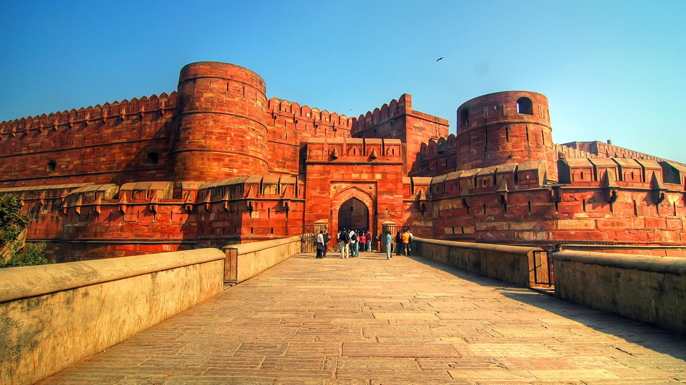
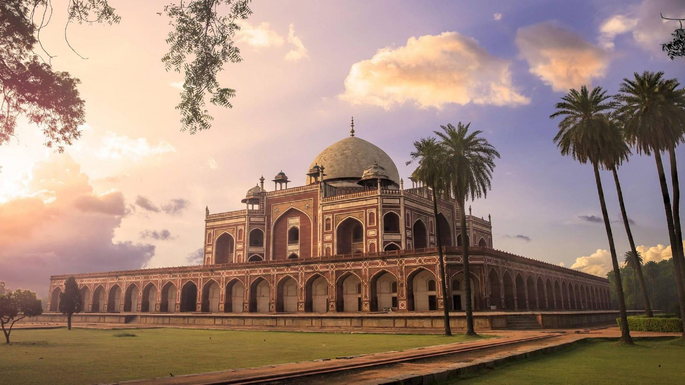
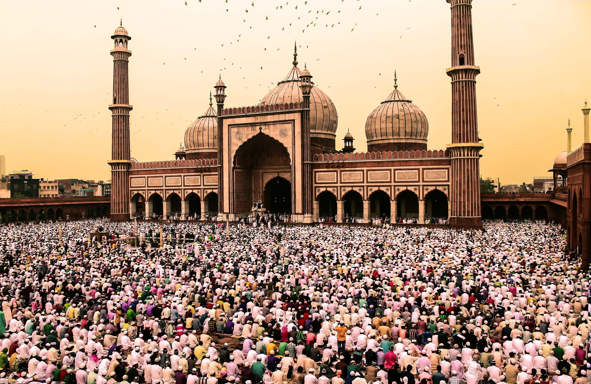
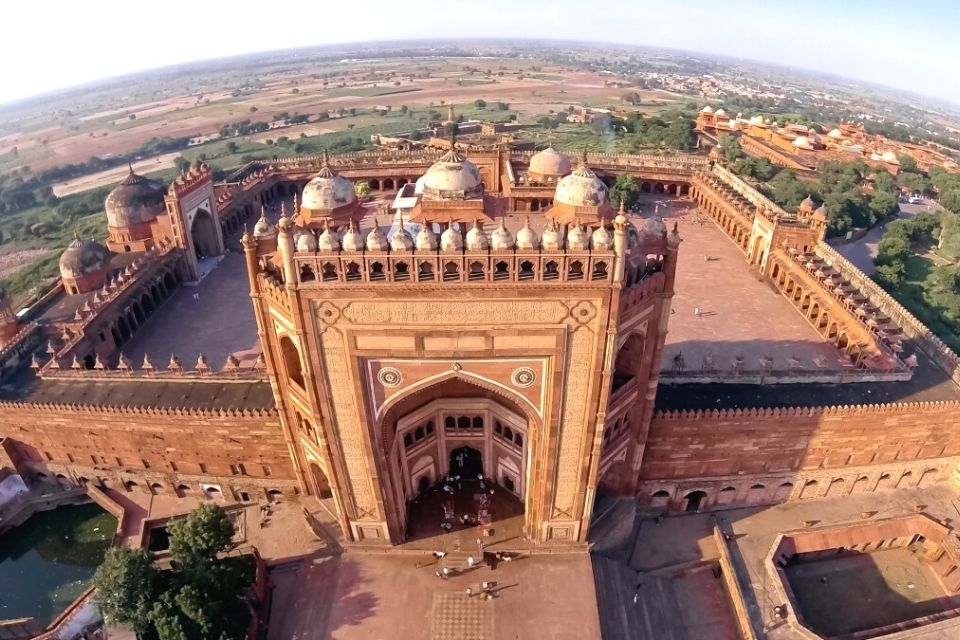
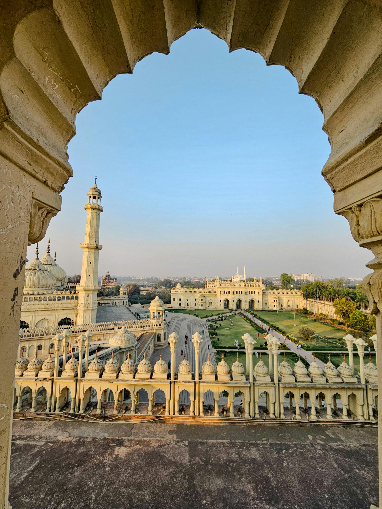

Mughal Monuments
The Mughal Empire (1526-1857) left behind some of India's most iconic architectural masterpieces, characterized by grand domes, intricate inlay work, and beautiful gardens.

Red Fort, Delhi
Built: 1638-1648 | Builder: Shah Jahan
The main residence of Mughal emperors for nearly 200 years. Built with red sandstone, the fort complex includes palaces, audience halls, and mosques. The Diwan-i-Khas hall once housed the famous Peacock Throne and Kohinoor diamond. The fort covers 254 acres and its walls extend for 2.5 km.
India's Prime Minister hoists the national flag here on Independence Day

Agra Fort, Agra
Built: 1565-1573 | Builder: Akbar
A massive red sandstone fort that served as the main residence of Mughal emperors until 1638. The fort contains beautiful palaces like Jahangir Mahal, Khas Mahal, and Sheesh Mahal. Emperor Shah Jahan was imprisoned here by his son Aurangzeb and spent his last days gazing at the Taj Mahal from Musamman Burj.
UNESCO World Heritage Site

Humayun's Tomb, Delhi
Built: 1565-1572 | Builder: Bega Begum
The first garden-tomb in India and inspiration for the Taj Mahal. Built by Emperor Humayun's widow, it combines Persian and Mughal architectural elements. The tomb stands on a 7-meter high platform and features a double dome. The complex houses over 150 graves of Mughal royalty.
UNESCO World Heritage Site

Jama Masjid, Delhi
Built: 1650-1656 | Builder: Shah Jahan
One of the largest mosques in India, capable of holding 25,000 worshippers. Built with red sandstone and white marble, the mosque features three great gates, four towers, and two 40-meter high minarets. The courtyard can accommodate 25,000 people. Construction involved 5,000 workers over six years.
Houses relics of Prophet Muhammad

Buland Darwaza, Fatehpur Sikri
Built: 1601 | Builder: Akbar
The "Gate of Victory" is 54 meters high and is the highest gateway in the world. Built by Akbar to commemorate his victory over Gujarat. The structure is adorned with verses from the Quran and features intricate inlay work. The gateway has a total of 42 steps leading to the entrance.
Part of Fatehpur Sikri UNESCO site

Bara Imambara, Lucknow
Built: 1784 | Builder: Nawab Asaf-ud-Daula
Bara Imambara is one of the most iconic monuments of Lucknow, built during a severe famine to provide employment to the people. It is renowned for its massive central hall, one of the largest arched constructions in the world without beams or pillars. The monument also houses the famous Bhool Bhulaiya, a complex labyrinth of narrow passages and stairways.
Architectural marvel of Awadhi craftsmanship